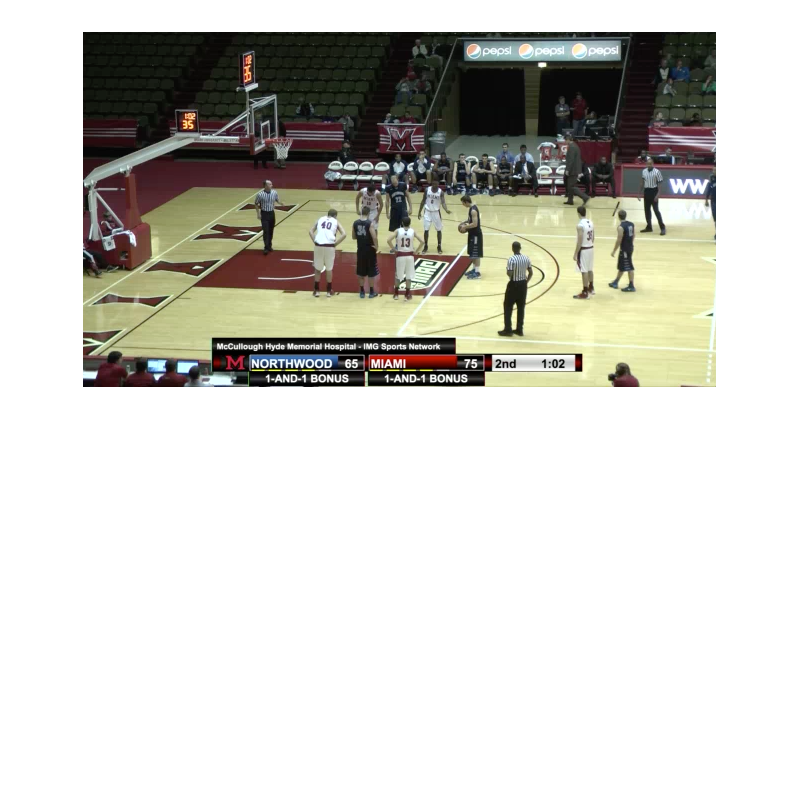
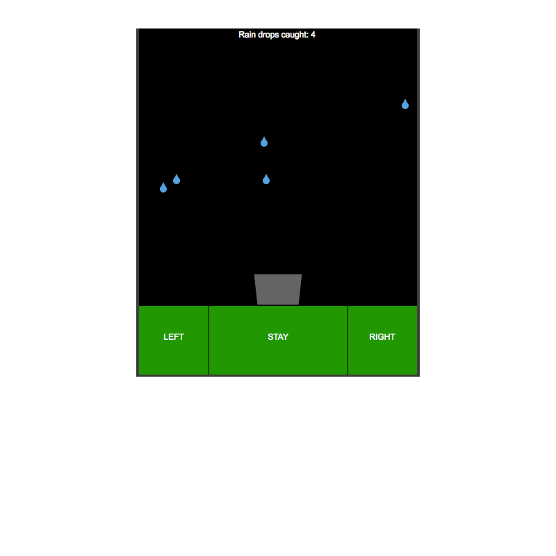
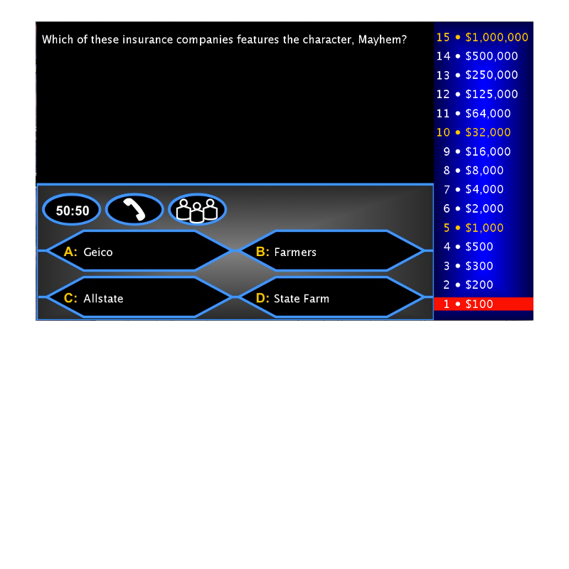
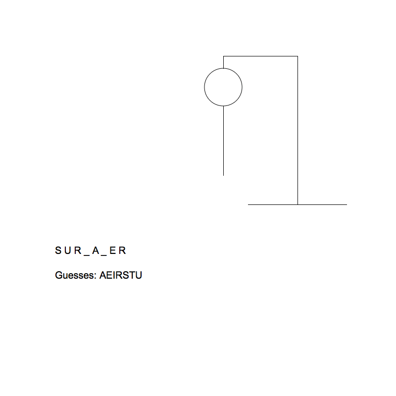
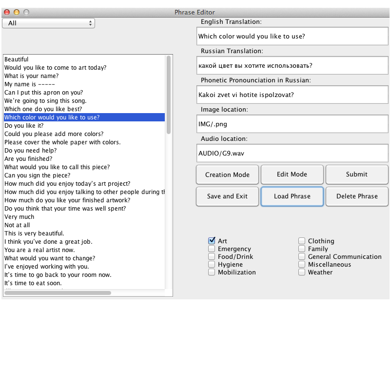
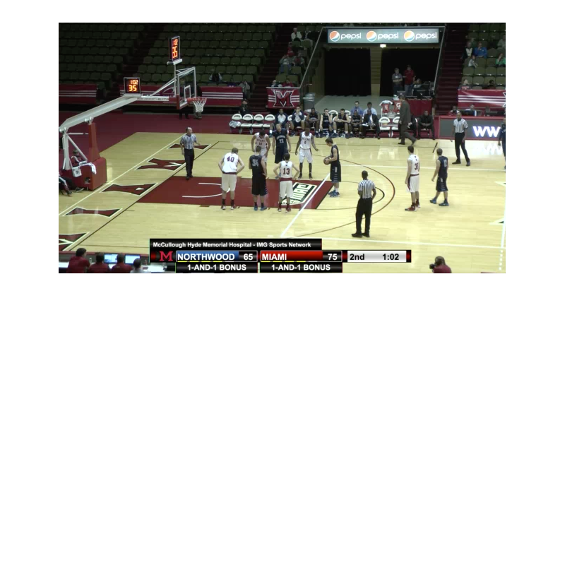
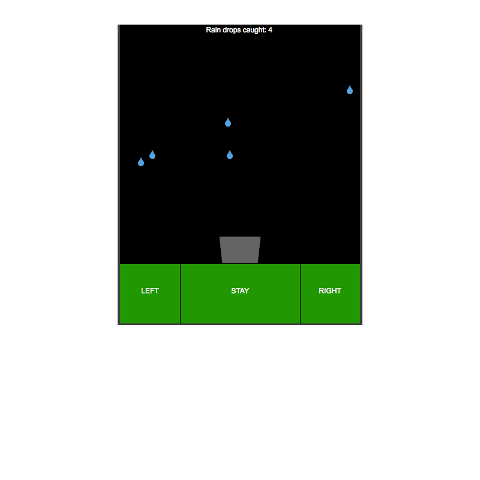
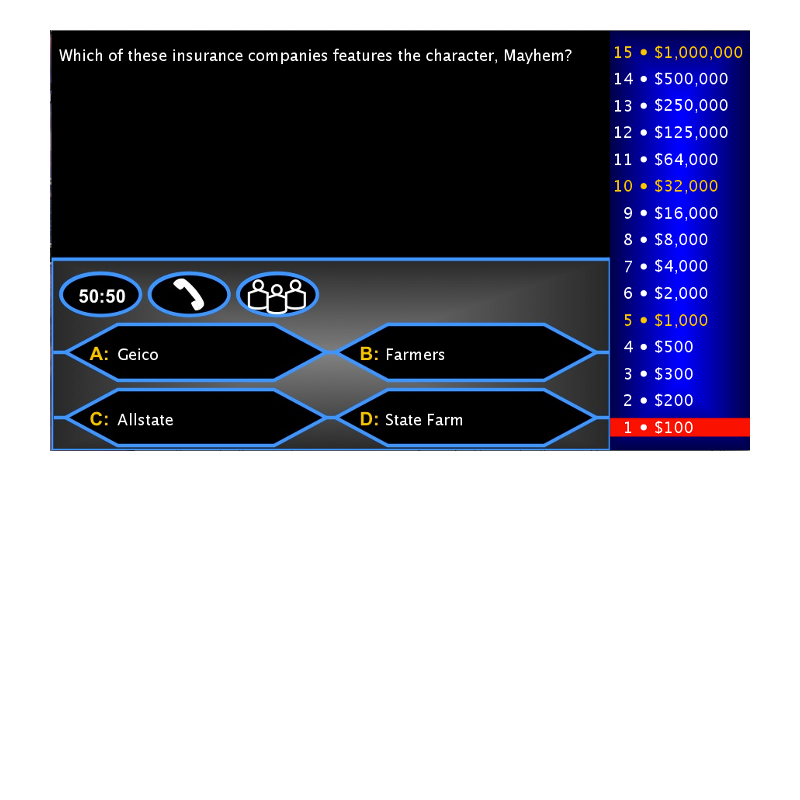
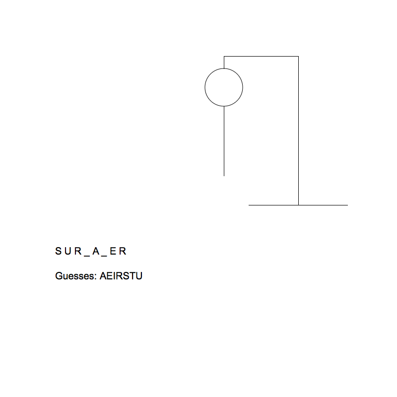
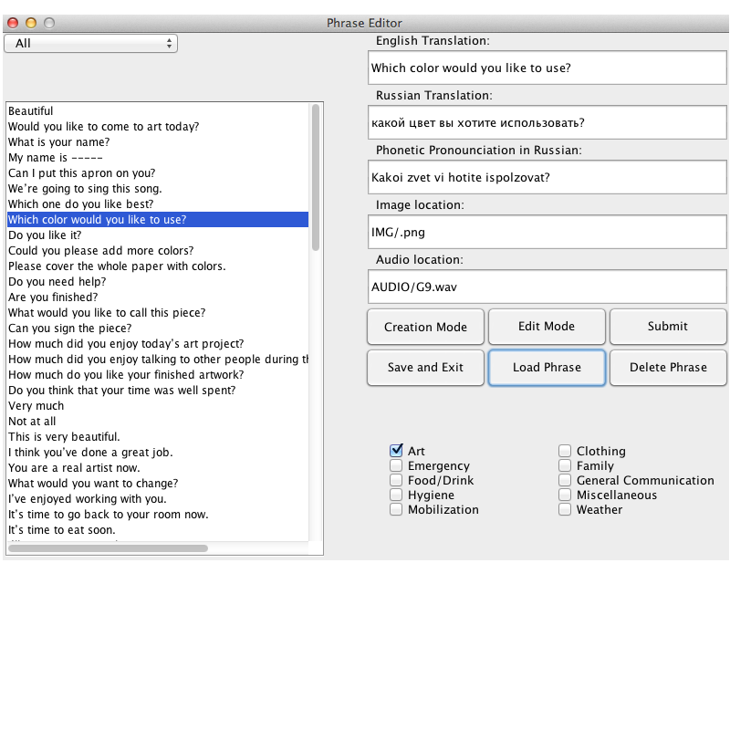

My name is Douglas Blase, and I am a Computer Science major at Miami University, class of 2016. I enjoy programming and sports, and have particluarly enjoyed working on sports broadcasts at Miami. Click here to go to the ec2 versions of these webpages.
 








